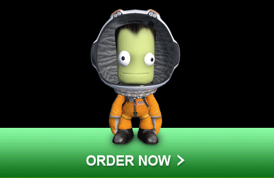
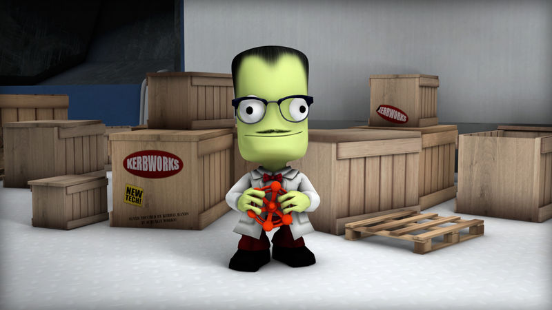
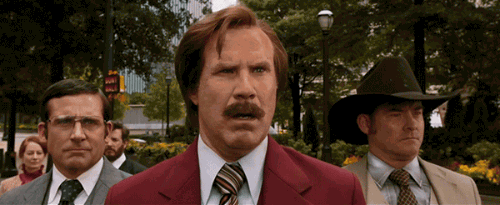

Introduction au versionnement
David Sferruzza
Créer
La créativité est un processus mental impliquant la génération de nouvelles idées ou concepts, ou de nouvelles associations entre des idées et des concepts préexistants.
Le processus de création présente des similarités intéressantes, qu'on crée :
- un programme informatique
- un morceau de musique
- un livre sur les pokémons
- les plans d'une fusée...
Meet Jebediah Kerman
...qui sera notre exemple pour cette présentation !

Meet Jebediah Kerman
Jebediah Kerman veut créer une fusée pour attendre l'orbite de sa planète, et revenir au sol en un seul morceau !
Meet Jebediah Kerman
Avant de réussir, il va probablement échouer, et recommencer.
Meet Jebediah Kerman
Encore.
Meet Jebediah Kerman
Et encore.
Meet Jebediah Kerman
À chaque fois, il devra améliorer ou ajuster le plan de sa fusée. En pratique, c'est loin d'être simple :
- manipuler un document complexe
- faire beaucoup de petites modifications et tester
- changer d'avis et revenir en arrière
- tester des modifications structurelles importantes
Tout ça en collaboration avec Wernher von Kerman, le célèbre ingénieur !

Représentation
On ne va pas versionner directement ce qu'on veut créer, mais une représentation. Cette représentation doit nous permettre de construire de façon suffisamment reproductible ce qu'on veut créer.
| code source |
compilation |
programme |
| partition |
interprétation |
musique |
| plans de fusée |
assemblage |
fusée |
Créer va donc se concrétiser par des évolutions de la représentation.
Versionnement
Le versionnement, c'est la journalisation des évolutions de la représentation.
On peut imaginer une sorte de timeline où chaque nœud représente une modification :
Git
Git s'occupe de tenir le journal des évolutions à la place du créateur (ou plutôt il l'aide beaucoup).
Git fonctionne avec n'importe quelles représentations sous forme d'arborescences de fichiers.
Regardons ses concepts de base...
Commit
Le créateur va faire évoluer la représentation. Lorsqu'il atteint un état qui lui convient, il va enregistrer au sein d'un commit les modifications qu'il a effectuées.
- référence du commit parent (sauf pour le 1er)
- date et heure
- auteur
- contenu de la modification
- commentaire explicatif
Un commit stocke les changements par rapport à l'état du commit parent. Il ne stocke pas le nouvel état.
Branche
La timeline des commits peut diverger ou converger. Chaque divergence est représentée par une branche :
Les branches permettent, entre autres, de :
- faire des essais en isolation
- rendre l'historique plus lisible, en groupant des commits
- faciliter la collaboration entre personnes
Avantages
Git permet de :
- versionner sa création, sans pour autant interférer trop lourdement dans le processus de création
- travailler à plusieurs sur la même chose, sans avoir besoin d'être toujours connecté
- naviguer dans l'historique, et obtenir la représentation telle qu'elle était à n'importe quel moment
- retrouver quelle modification a introduit un comportement donné, et qui l'a faite
- ...
Applications
Git a été fait pour gérer des codes source de programme, mais son modèle a beaucoup de sens dans plein d'autres situations.
Voici quelques exemples où Git est utilisé pour versionner :

Conclusion
- le versionnement c'est l'écriture de l'histoire des évolutions de votre projet
- Git est puissant, et pertinent dans pas mal de situations
La prochaine fois que vous créerez quelque chose, demandez-vous si ça vaut le coup de le versionner !